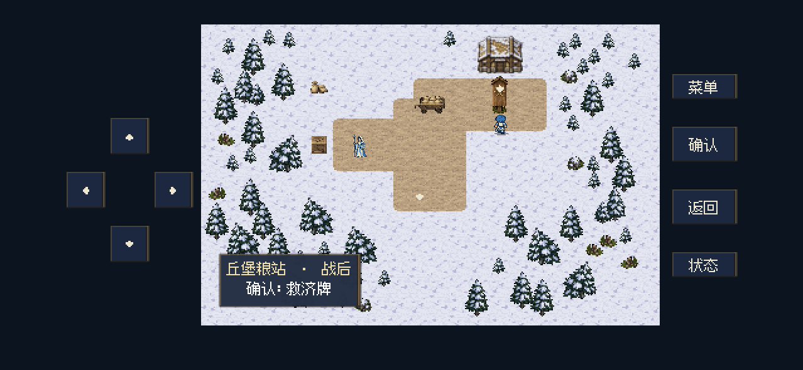
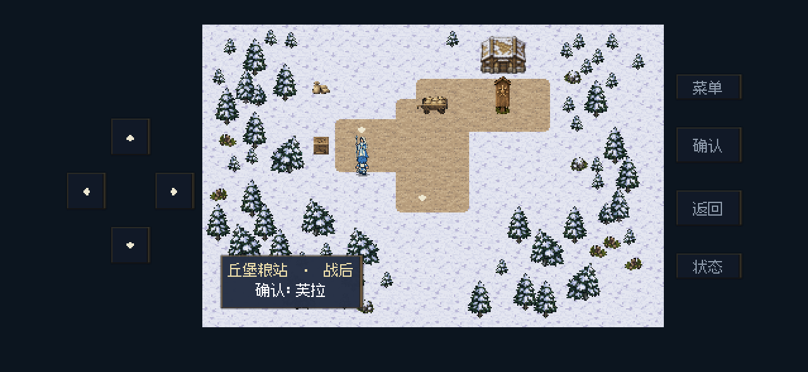
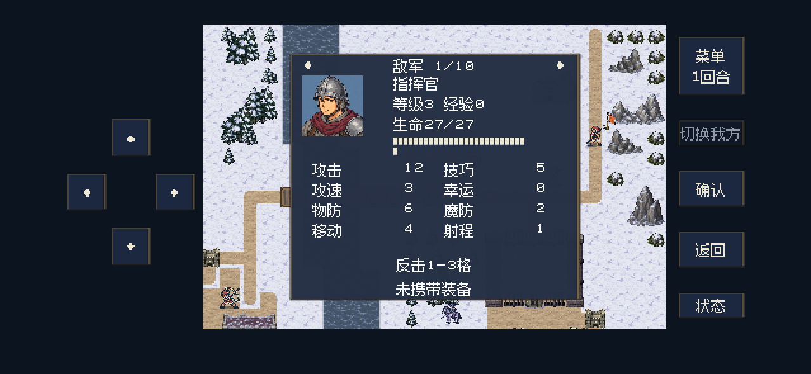
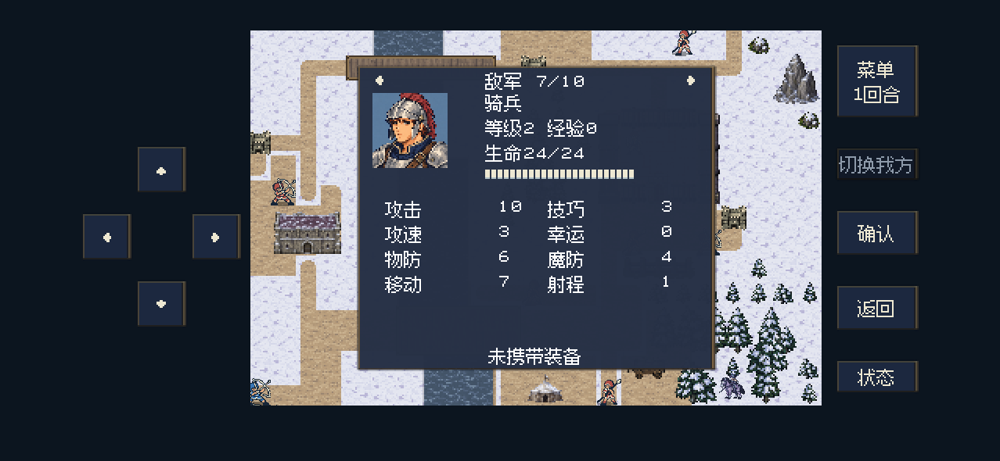

2026-10-26 · 修改后实际运行画面
粮站、邀请反馈与南岗押送所修复
六项修改完成 · 两名骑兵升为2级 · 两轮抽查与试玩通过
以下截图来自Mac原生Godot后台运行，使用移动端界面布局。本轮没有安装或更新iPhone；这些是本地原生运行截图，不是iPhone设备截图。
修改依据与验证说明（Markdown） · 两轮运行记录 · 邀请与读档回归
| 敌军 | 等级 | 攻击 | 物防 | 魔防 | 移动 |
|---|
| 南岗指挥官 | 3 | 12 | 6 | 2 | 4 |
| 两名骑兵 | 2 | 10 | 6 | 4 | 7 |
两轮M13分别在第17、12回合获胜，战后军令交付、邀请、教堂合作与继续前进均正常。停帧接管问题修复后又单独复核了新建记录流程，没有重打已通过的第一轮战斗。
粮车：两格均有碰撞；右半部分也可确认分粮。
牌子后方：角色被牌子遮挡。
牌子前方：角色正常显示，绘制顺序随位置变化。
芙拉邀请成功：此画面停留2秒，同时播放专属短乐；停帧期间不能移动、确认或打开菜单，之后进入接受邀请对白。
专属入队短乐《同行的新约》试听：
指挥官：攻击12、物防6、魔防2。
骑兵：名称与职业纠正；2级、攻击10、魔防4、移动7格。另一名骑兵使用相同修正。